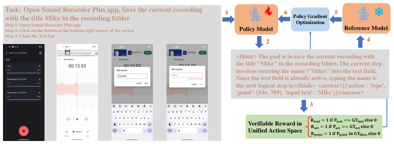
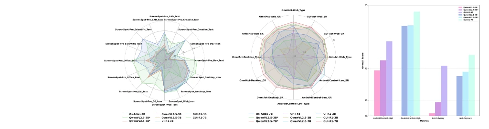
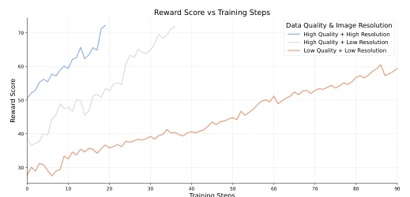
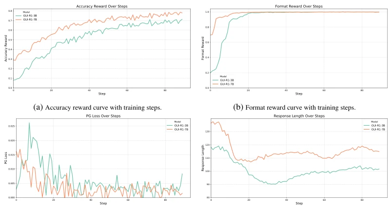
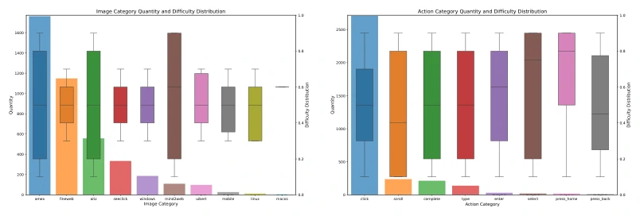

This paper poured cold water on the GUI Agent community, yet also handed them a crutch. Previously, everyone competed heavily in SFT, pushing data volume to 13 million entries; GUI-R1 directly countered with 3,000 data entries, using RFT to thoroughly outperform OS-Atlas. This operation resembles the GUI version of DeepSeek-R1, replacing massive annotations with rule-based rewards, indeed saving computational power. But do not rejoice too early; it is still based on QwenVL fine-tuning, not breaking out of the "large model + fine-tuning" paradigm. Moreover, the visualization explicitly stated that the "aha moment" did not appear, indicating that in single-image non-interactive environments, RL cannot yet fully replace human trial-and-error. However, being generalizable across mobile, desktop, and web ends, this ambition of a unified action space deserves praise, providing a clear path for resource-constrained teams. Although highly generalizable, it may still require more verification in complex interactions.
Existing GUI Agents mostly rely on Supervised Fine-Tuning (SFT), such as OS-Atlas [1] and UITars [2]. Although these two are strong, they have a fatal flaw: they are too data-hungry. SFT requires massive high-quality annotations, and models struggle to generalize to unseen interfaces. Especially for high-level tasks, without clear steps, models easily get confused. The authors found that the reasoning capabilities of large language models can be improved via Reinforcement Fine-Tuning (RFT), such as DeepSeek-R1 [10]. Thus, they wondered if RFT could be moved to GUI. This would both reduce data dependency and enhance the model's understanding of complex interfaces. The core pain point is: how to make the model learn to operate GUI like humans with less data, rather than rote memorizing annotations. Existing methods perform poorly on unseen interfaces, limiting practical application, especially when high-level tasks lack clear instructions.
The overall process proceeds in three steps. First is data cleaning, screening out 3,000 high-quality data entries from 14 million, called GUI-R1-3K. The key innovation lies in the "Unified Action Space", standardizing actions across different platforms like Windows, Android, and Web to avoid conflicts. Next, a verifiable reward function is designed, divided into format reward and accuracy reward. Accuracy reward is further subdivided into action type (click or scroll), click point position (whether within target box), and input text (semantic F1 score). Format reward guides output structure, accuracy reward ensures action correctness, combining both improves training efficiency. Finally, the GRPO algorithm is used for policy optimization; the model generates multiple trajectories and updates the policy based on rewards. This is like letting the model practice tasks itself, giving points for correct answers and deducting for wrong ones, rather than direct teacher instruction. Unified action space solves multi-platform data conflicts, reward function ensures correct training direction, GRPO guarantees stable policy updates.

Figure 2: Overview of the GUI-R1 Framework. Given the high-level instruction, action history, and visual image inputs, the policy model generates multiple responses containing reasoning steps. Then the verifiable rewards, such as action type reward, click point reward, and input text reward, are used with the policy gradient optimization algorithm to update the policy model.
Ran on 8 benchmarks, covering mobile, desktop, and Web. Comparison baselines include OS-Atlas [1], UI-R1 [9], and QwenVL base. Results are impressive; the 3B model surpassed OS-Atlas using only 0.02% of the data (3K vs 13M). It is stronger than GPT-4o on high-level tasks. Ablation experiments show data quality is more important than quantity, and high-resolution images can accelerate convergence. However, if the format reward weight in the reward function is too high, the effect is worse, indicating that accuracy reward is the core. It also showed good performance on AndroidControl and GUI-Odyssey. Significant improvements were observed on ScreenSpot and OmniAct, proving the potential of RFT in the GUI field.

Figure 1: GUI-R1 achieves the best performance on eight evaluation datasets covering various plat- forms and task granularities, demonstrating the promising potential of RFT in GUI agent tasks.

Figure 4: Ablation study of image resolution and data quality.

Figure 5: Visualization of the training process of GUI-R1 . To provide more details, we report the curves of GUI-R1 ’s key metrics during training, including format reward, accuracy reward, mean response length, and policy gradient (PG) loss, as they vary with the training steps.
其他图片Other Figures

Figure 3: Illustrations of image and action category quantity and difficulty distributions in the dataset GUI-R1-3K.